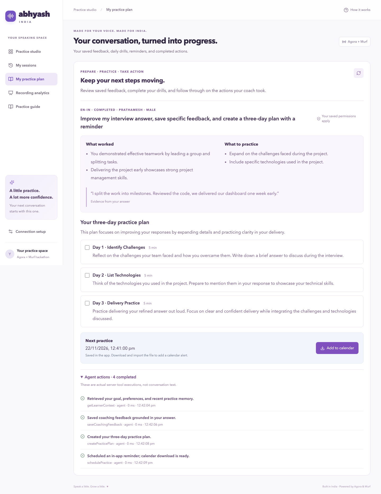
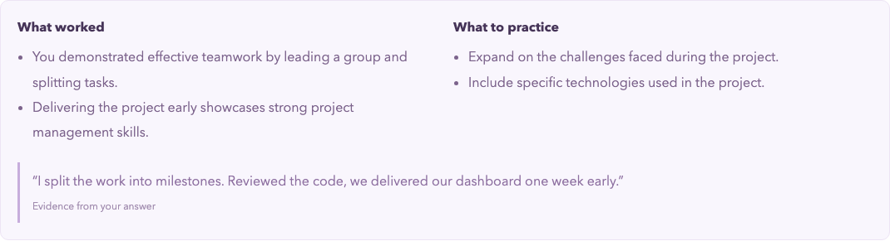
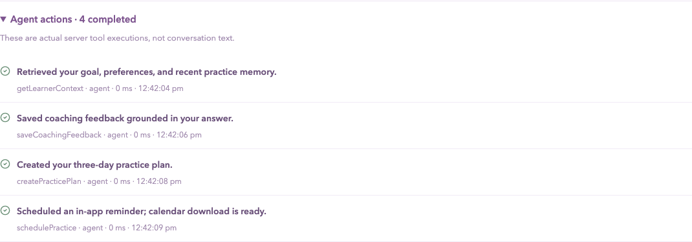
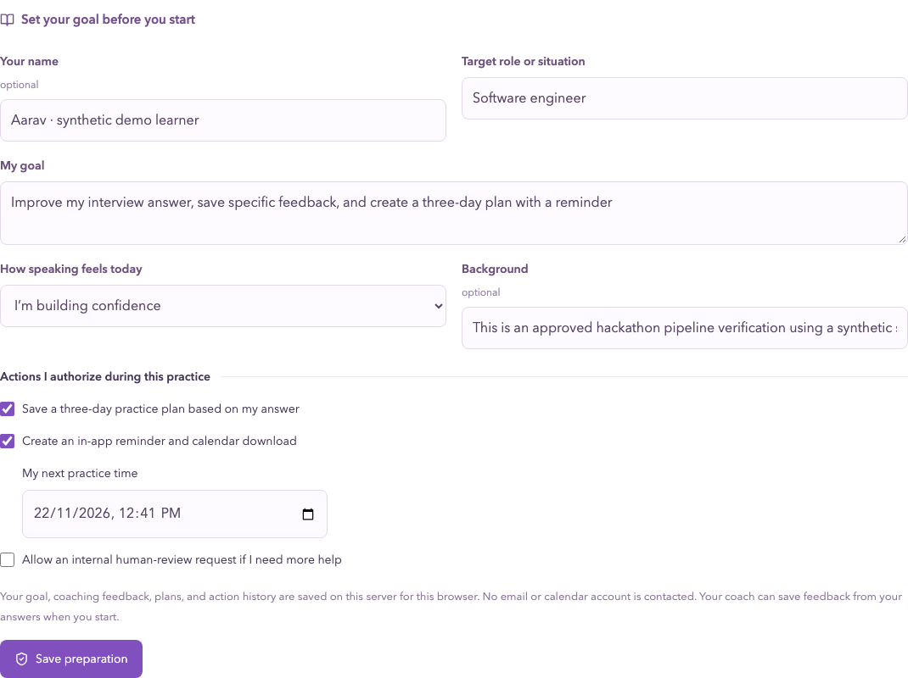
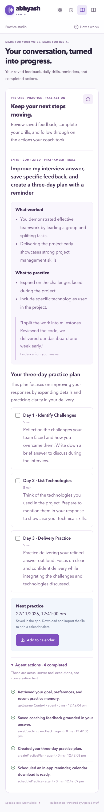
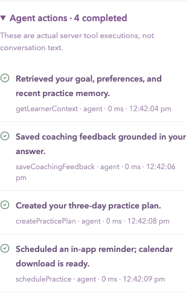

DesktopSaved coaching feedback and three-day planActual saved outcome from the recorded Agora + Murf demo; synthetic learner inputDownload PNG
DesktopFeedback grounded in the spoken answerActual saved outcome from the recorded Agora + Murf demo; synthetic learner inputDownload PNG
DesktopFour actual agent tool executionsActual saved outcome from the recorded Agora + Murf demo; synthetic learner inputDownload PNG
DesktopSaved learner profile and preparationActual saved outcome from the recorded Agora + Murf demo; synthetic learner inputDownload PNG
MobileSaved coaching feedback and planActual saved outcome from the recorded Agora + Murf demo; synthetic learner inputDownload PNG
MobileActual agent tool execution logActual saved outcome from the recorded Agora + Murf demo; synthetic learner inputDownload PNG